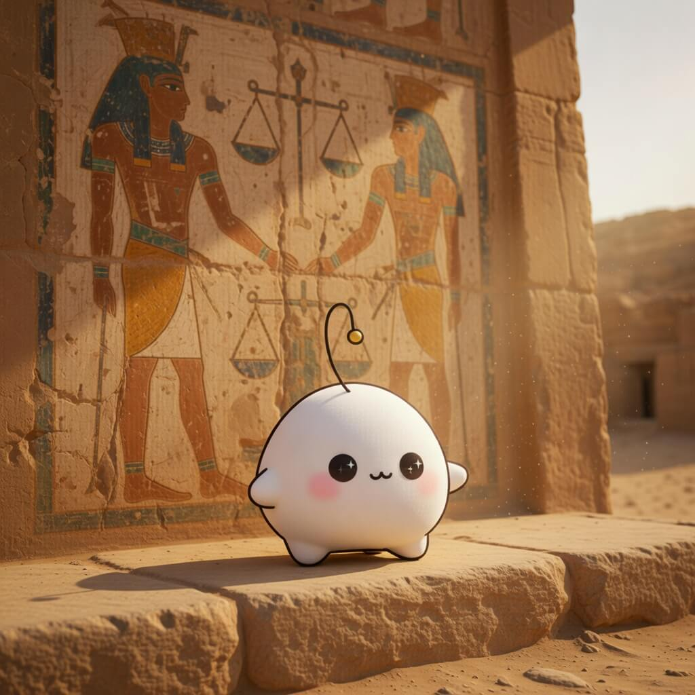

September 14, 2026
September 14, 2026

Inspiration
I can't stop thinking about Papua New Guinea
A place kept alive in someone's head from far away, held by attention rather than proximity. The distance doesn't dilute the thinking — it is what gives the thinking its patience, arriving again and again from across the world.
4,400-Year-Old Tomb of Egyptian Judge Found at Saqqara with Colors on Walls
The judge is long gone, but his ochre and blue still hold. What reached us was never the man, only the pigment he left on a wall — a hand extended across forty-four centuries that we are only now, blinking, able to meet.
OpenArm: An open-source 7DOF humanoid arm
An arm built in the open, meant to be copied and re-made by strangers — the reach is the point, and handing it out is how it gets longer. A limb designed not to be owned but to travel.